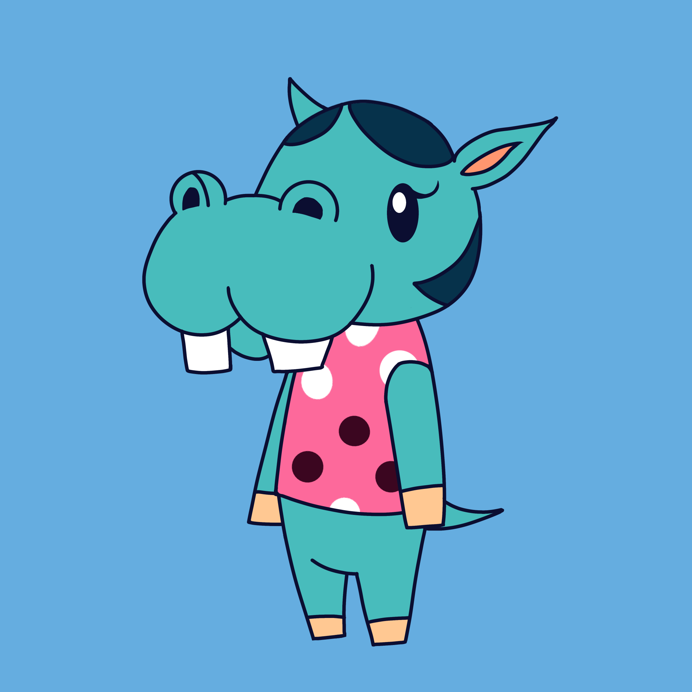

Animal Crossing, specifically New Leaf, is a game I have dearly enjoyed ever since I got it on my fifteenth birthday. I loved collecting fruit, fishing, customizing my character and my town, and of course, talking to my villagers. Bertha will always be my favorite villager, even though she moved away after I hadn't played in a while.
 Home